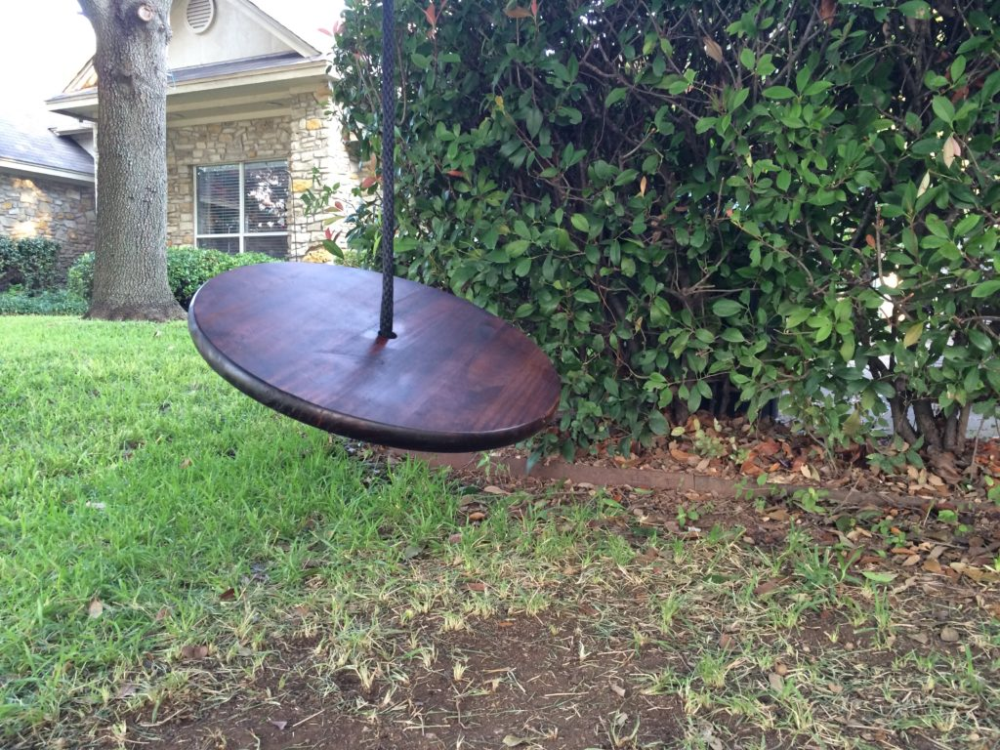

The Swing

My wife and I made it for them last November. I went to talk to them out of concern when I saw them flinging what appeared to be clothes line across various branches and suspending themselves from it in futile attempts to swing. They explained they wanted a swing and had set out to make it so. I confiscated their clothes line. My wife and I were in the middle of the heartbreak after saying goodbye to our beloved dog Sean. We were suffocating under the weight of grief and nothing seemed able to pull us out of the pit. We decided to make the kids a swing. It felt like something we could do to simultaneously take our minds off our grief and turn our focus from ourselves to someone else. It's been a year since we said our last goodbye to Sean. It's mostly easier now, but there are still times when one of his pictures glides across our Apple TV's or my computer's screensaver when it still aches knowing he's gone and remembering all he means to us. Other times I hear the kids squealing with delight as they swing and another bit of my grief is balanced by just a touch of joy, hope, and healing.